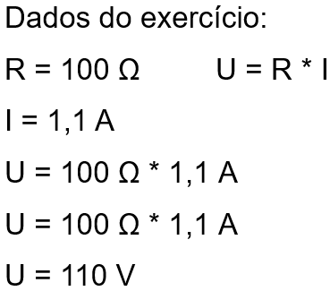

(VUNESP) Os valores nominais de uma lâmpada incandescente, usada em uma lanterna, são: 6,0 V; 20 mA. Isso significa que a resistência elétrica do seu filamento é de:
a) 150 Ω, sempre, com a lâmpada acesa ou apagada.
b) 300 Ω, sempre, com a lâmpada acesa ou apagada.
c) 300 Ω com a lâmpada acesa e tem um valor bem maior quando apagada.
d) 300 Ω com a lâmpada acesa e tem um valor bem menor quando apagada.
e) 600 Ω com a lâmpada acesa e tem um valor bem maior quando apagada.
Uma lâmpada incandescente é atravessada por uma corrente de 1,1 A. Sendo a resistência elétrica da lâmpada igual a 100 Ω, qual é o valor da d.d.p. entre seus terminais?
